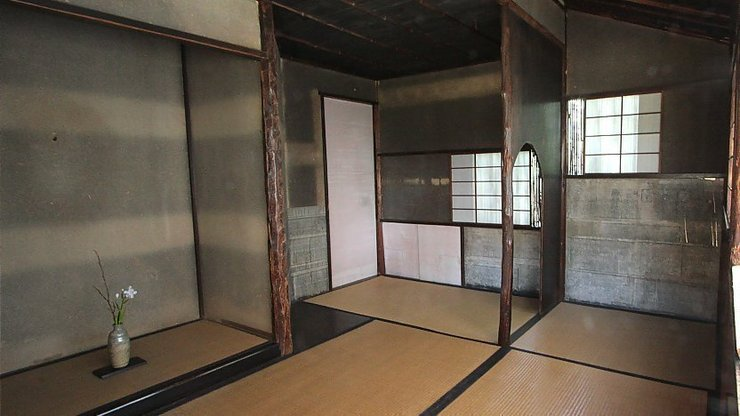
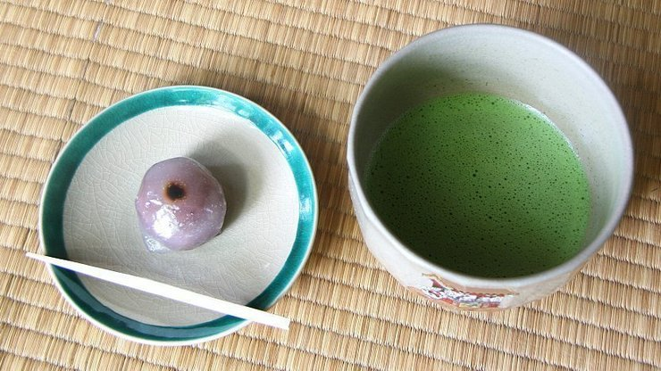
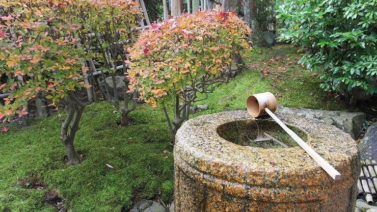
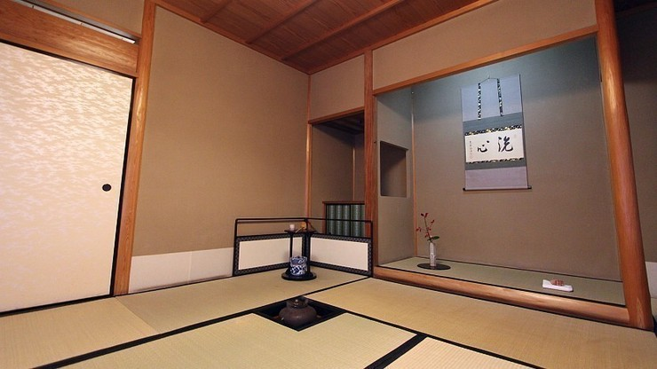
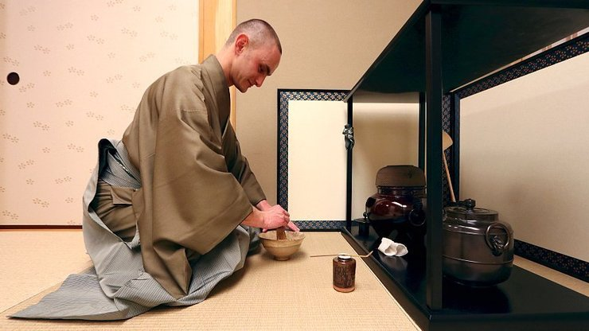

The Japanese tea ceremony (茶道, sadō or chadō, lit. "the way of tea" or 茶の湯, chanoyu) is a Japanese
tradition steeped in history. It is a ceremonial way of preparing and drinking green
tea typically in a traditional tearoom with tatami
floor.
Beyond
just serving and receiving tea, one of the main purposes of the tea ceremony is for the guests to enjoy
the hospitality of the host in an atmosphere distinct from the fast pace of everyday life.
Historic background
Tea was introduced to Japan in the 8th century from China and was drunk as a medicinal beverage mainly
amongst priests and the upper class. It was not until the Muromachi Period (1333-1573) that the beverage
gained popularity among people of all social classes. Among the affluent members of society, tea
drinking parties became popular in which participants would show off their exquisite tea bowls and
display their knowledge about tea.
Around the same time, a more refined version of tea parties developed with Zen-inspired simplicity and a
greater emphasis on spirituality. It is from these gatherings that the tea ceremony has its origins. The
father of the modern way of tea was Sen no Rikyu (1522-1591) who advocated an austere, rustic
simplicity. Most of today's schools of tea ceremony, including Omotesenke and Urasenke, developed from
his teachings.

A tearoom from the era of Sen no Rikyu
Tea ceremony procedure
A full, formal tea ceremony is a multi-hour event that starts with a kaiseki course meal, is followed by
a bowl of thick tea and ends with a bowl of thin tea. However, most tea ceremonies these days are much
abbreviated events that are limited to the enjoyment of a bowl of thin tea.
The protocol of a tea ceremony is defined down to exact hand movements which vary slightly between the
different schools. In most cases, regular tourists are not expected to know the rules in detail, but a
knowledge of the basic points below can help make the event a more dignified affair.

A Japanese sweet and a cup of thin tea
1) Dress code
Avoid gaudy fashion and fragrance that distracts from the tea experience. Wear modest clothes, remove
jewelry that may damage the tea equipment and avoid strong perfumes.
2) Garden
The traditional tea ceremony venue is surrounded by a garden, although many modern venues lack a
garden. The garden is deliberately kept tranquil and simple to encourage a calm spirit. Flowers with
gaudy colors or deep scents are avoided as they are a distraction. Stones of varying shapes and
sizes make up the path that leads to the teahouse. A stone lantern is placed close to a stone basin
near the entrance where visitors wash their hands before entering the tearoom.

3) Tearoom
The ceremony is traditionally held in a tatami room. The entrance for guests is sometimes kept low so
that entering guests have to bend over, symbolizing humility. Decorative elements in the tearoom,
include an alcove (tokonoma) where a scroll or seasonal flowers are displayed.
After a bow, the head guest enters the room and takes the seat closest to the alcove, followed by
the other guests. Guests ideally sit in a seiza position on the tatami floor. Once guests have taken
their positions, it is customary to bow once more before observing the decorations which were
carefully selected for the occasion.

4) Preparing the tea
The host typically prepares the tea in front of the guests. The main equipment includes the tea
whisk (chasen), tea container for the powdered green tea (natsume), tea scoop (chashaku), tea
bowl, sweets container or plate, and the kettle and brazier. Each piece of equipment was
carefully selected according to circumstance and has its specific place.

A tea master is preparing tea
5) Enjoying the tea and bowl
A Japanese sweet is served before tea and is supposed to be
eaten
before
the tea is drunk. The tea bowl is placed onto the tatami mat in front of you, with its front
facing you. Pick it up with your right hand and place it on your left palm. With your right
hand, turn it clockwise by around 90 degrees so that its front is not facing you anymore. Drink
the tea in a few sips and place it back onto the tatami. Bow and express gratitude after
receiving and finishing your tea.
Towards the end of the ceremony, there will be time to inspect and appreciate the tea bowl by
lifting it. Once finished, turn the bowl so that the front now faces the host. The host may ask if
guests would like another round of tea, and if not, the tea ceremony is over when the host washes
the tea utensils and returns the equipment to where they were before starting.